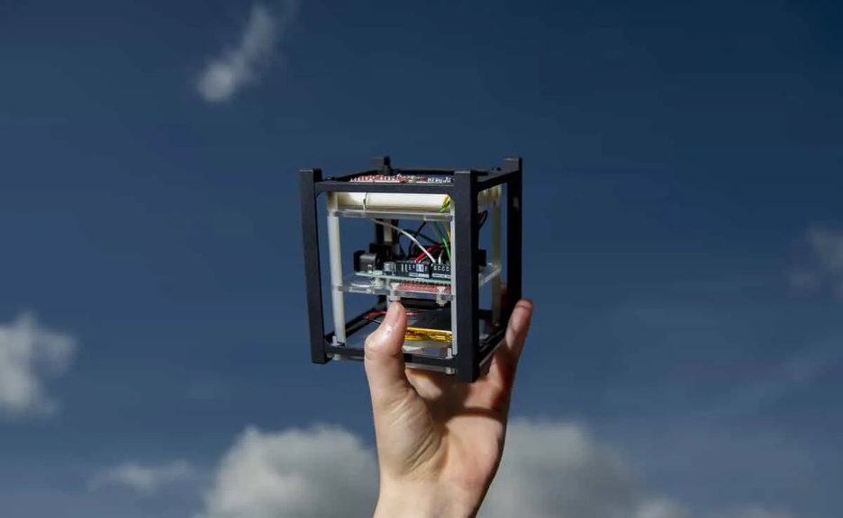
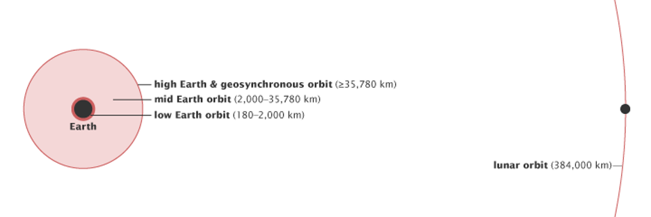
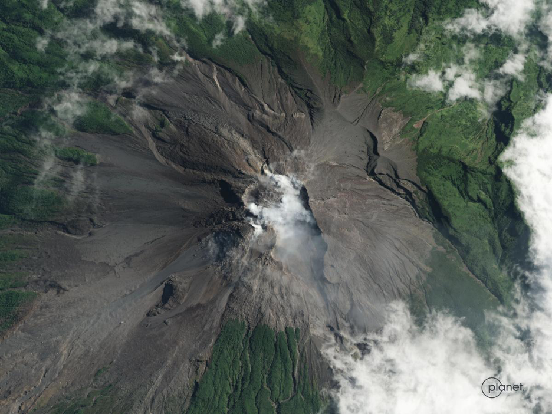
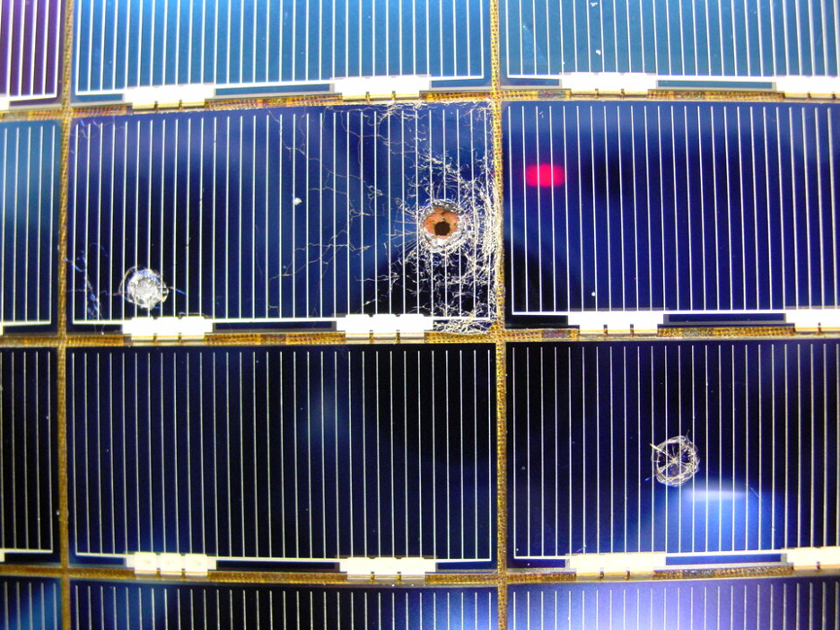
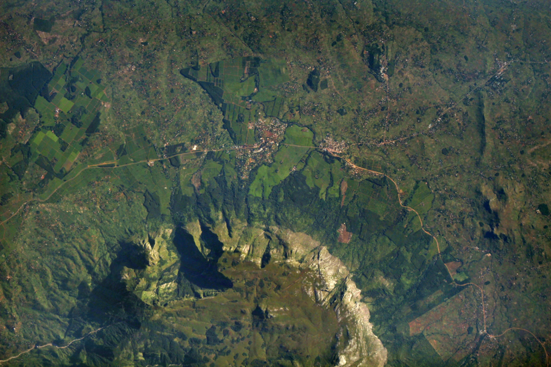
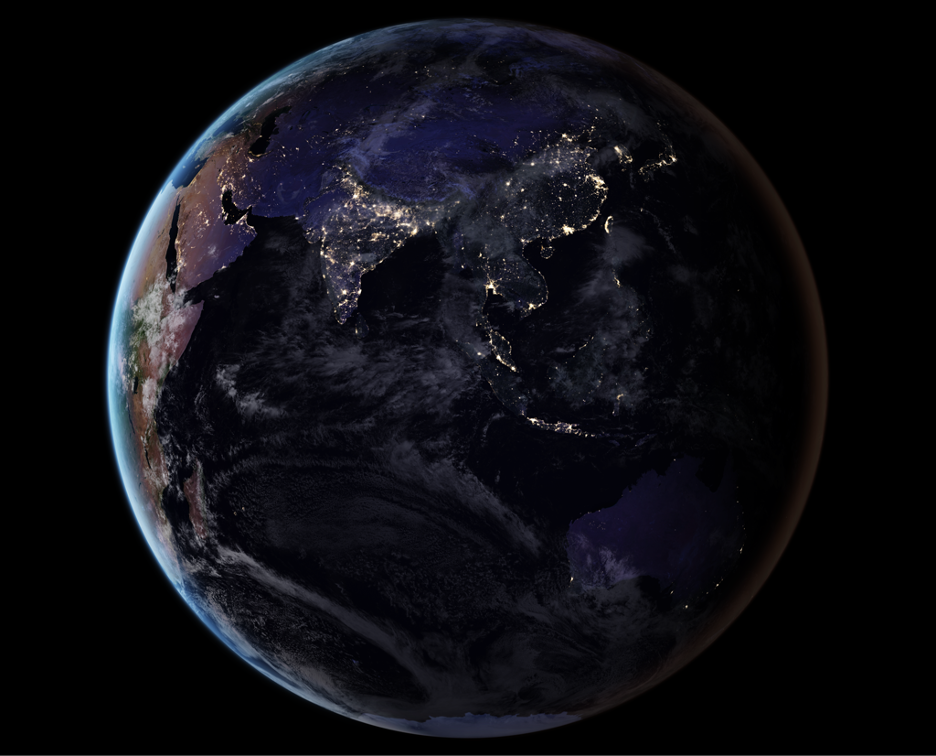
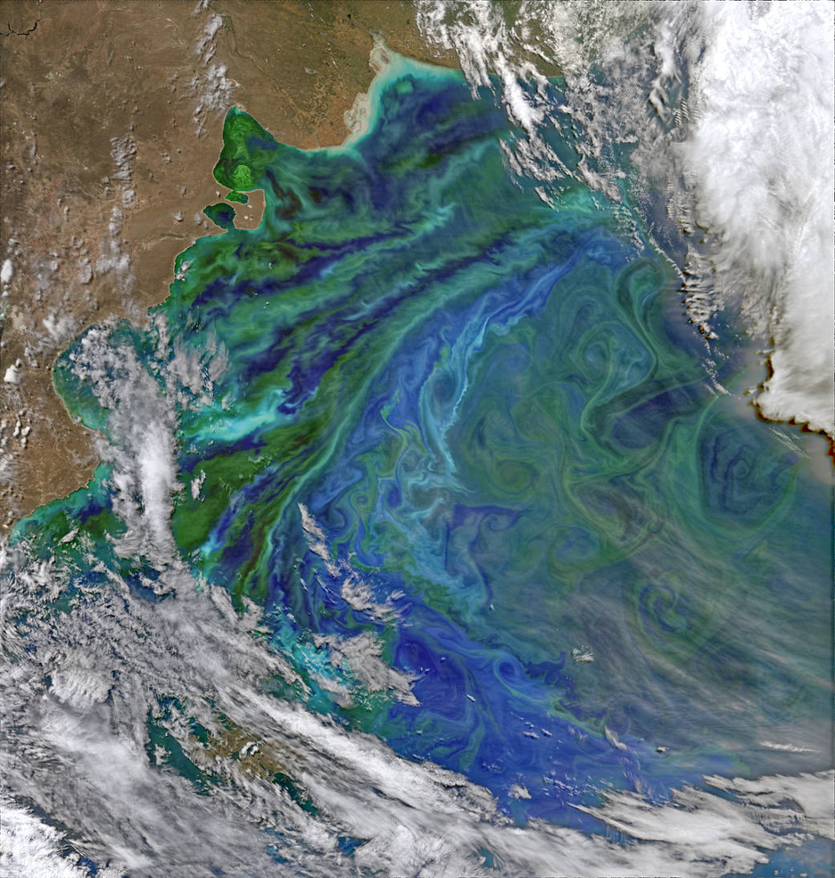

Satellite Systems

What is a satellite?
A satellite is an object that orbits a planet or star; it can be a natural body like the Moon orbiting Earth, or an artificial object deployed by humans for diverse functions, including communication, Earth observation, navigation, and scientific exploration.
While Earth has one natural satellite, the Moon, several thousand artificial satellites trace orbits around the Earth. These human-made satellites range from 10 centimeter cubes weighing about a kilogram, called SmallSats, to the International Space Station. Each carries instruments to perform specific tasks like connecting distant points through telecommunications links and observing Earth’s surface.
How do satellites work?
Satellites use specialized instruments to perform applications such as communication, Earth observation, navigation, and scientific research, collecting and transmitting relevant data back to ground stations, while being remotely managed and controlled.
At the most basic level, satellite systems have three component segments: the space segment, the terrestrial segment, and the data link between the two. In satellite systems that are comprised of multiple space objects, there is also often a data link between the satellites. Since satellites in Earth’s orbit can be several thousand kilometers away from the nearest human, all of the instruments, tools, and fuel a satellite might need must be loaded into the machine at the start. This makes it difficult to change a satellite’s primary mission, although different end users may use the same satellite-derived data for varying purposes.
The terrestrial segment is most often a ground station that receives radiofrequency signals from satellites, but some systems have multiple ground stations or even transmit data to end users directly. For instance, while ground stations can be acres of antenna and data processing facilities, a television satellite dish or a satellite phone are two types of personal ground stations.
What is an orbit?

Orbits are the result of two objects in space interacting with just the right balance of gravity and momentum. If a satellite has too much momentum, it will overcome Earth’s gravity and escape out of orbit and move into deep space. If a satellite has too little momentum, it will be pulled down into Earth’s atmosphere. As long as a satellite’s momentum remains constant, the object will travel in a predictable, infinitely repeating path around the Earth.
Not all satellites have the same momentum, and therefore different satellites orbit the Earth on different paths. These orbits are broadly grouped by their altitude above the Earth’s surface. These categories are, from lowest to highest altitude, low Earth orbit (LEO), medium Earth orbit (MEO), and geostationary or geosynchronous equatorial orbit (GEO). While there is no globally recognized “edge” of space, low Earth orbit is generally considered the region below 1000 km above the Earth’s surface.
At the lowest altitudes, satellites must use onboard propulsion systems to overcome the effects of Earth’s atmosphere, which drags satellites out of orbit. When a satellite cannot overcome this drag, it de-orbits and often burns up upon reentry into Earth’s atmosphere. Sometimes, satellites or their component parts survive the reentry and crash into the surface of the Earth or into the ocean. Recent technological advancements have enabled satellite operators to achieve orbit at these very low altitudes. Typically, satellites in these low orbits take less than two hours to make one full trip around the globe. The amount of time a satellite takes to make one rotation around the Earth is called the “period.”
In contrast, geostationary or geosynchronous orbits take a full 24 hours to circle the globe. Because their period keeps pace with the rotation of the Earth, these satellites appear to stay fixed in one spot above the Earth unless an operator maneuvers them. GEO orbits are about 36,000 km above the surface of the Earth. The MEO region encompasses the remaining space between LEO and GEO.
Certain altitudes are better suited for certain types of tasks than others. For instance, because satellites in LEO are so close to the Earth’s surface, no one satellite can provide wide coverage of the Earth’s surface. Satellites in MEO and GEO can “see” more of the Earth at any one point in time, by virtue of their distance away from the Earth. The area of the Earth that a satellite can observe or service is called the “field of regard.” The size of this field is an important factor in deciding how many satellites an operator needs to provide a service and how high those satellites should be in orbit.

Early satellites were relatively small machines that performed rudimentary tasks or demonstrated a capability. During the early days of space exploration, designing and building a satellite was an expensive and long-term undertaking. Launching the satellite into space was another expensive step along the way to deploying a satellite. As engineers gained expertise in building and launching satellites, these machines grew in size and sophistication. Engineers designed hulking satellites weighing thousands of kilograms to carry several instruments, many of which remain in space today.
The paradigm of building one large object has shifted toward building many small objects to accomplish the same mission. These small satellites support the same mission in concert, forming networks called constellations. The concept of operating constellations of satellites is not particularly new – ambitious business plans from the 1980s aimed to leverage dozens of satellites to offer global telecommunications services. Constellations of satellites are often designed to provide a baseline of regional coverage, with the potential to enlarge the service range later. For instance, Japan’s Quasi-Zenith Satellite System uses a constellation of four satellites working in concert to provide navigation services in Asia-Pacific. The principle of using many satellites in concert has become more popular over time.
The plummeting cost of satellite manufacturing and launch has facilitated more exotic designs that include thousands of satellites, called megaconstellations. Operating hundreds or thousands of coordinated satellites in a megaconstellation offers distinct benefits. Megaconstellations can consist of thousands of satellites in LEO. Satellites in LEO have small fields of regard, meaning they can only service a sliver of the Earth’s surface at any given time. Adding another satellite, or several satellites, increases the service area by expanding the field of regard. Megaconstellations take this principle to the extreme, knitting thousands of individual satellites’ fields of regard together to create a blanket of coverage. Coordinating and precisely positioning satellites ensures the network can send signals to any point on the Earth at any time.
Operating in LEO offers other benefits. Megaconstellations orbiting at relatively low altitudes can send and receive signals from the ground more quickly than those further away from the Earth’s surface. Because the signal does not have to travel as far, LEO megaconstellations reduce the time a signal is “in transit” between ground stations and satellite terminals, called “latency.” This facilitates faster communications with less lag. Megaconstellations with low latency can help organizations become more efficient and productive as they transition to 5G technologies.
The further the distance between a satellite and the Earth, the more onboard power the satellite needs to send a signal from space to Earth. Minimizing the distance between satellites and ground stations also minimizes the amount of onboard power needed to produce the signal. This in turn helps reduce the satellite’s size, and often the price of manufacturing. Thus, although megaconstellations require hundreds if not thousands of satellites to provide global coverage, these satellites are generally cheaper per unit. This helps satellite owners stockpile replacement satellites in case any of the assets fail to reach orbit or break once they are in space.
The general trends of satellites becoming cheaper and decreasing launch costs have enabled more than just megaconstellations. Reducing the costs of fabricating and placing a satellite in orbit has opened the playing field to new actors, especially those who may have been excluded from participating in satellite-systems developments based on price alone. Space is no longer restricted to high income countries; now low and middle income countries (LMICs) can own the entire satellite-development lifecycle, including mission design, satellite fabrication, testing and validation, and operations. Relatively lower costs also allow prospective satellite operators to undertake missions that may not have been financially attractive to large or foreign corporations that did not have shared societal motivations.
In addition to the thousands of operational satellites in orbit, there are millions of pieces of space trash. Orbital debris is essentially anything in orbit that does not work – this includes everything from non-functional satellites to fragments of exploding bolts that are used to separate spacecraft from rocket boosters. Clouds of debris are generated when two space objects collide, independent of whether the collision was accidental or intentional. Even very small pieces of debris are dangerous – debris as small as a centimeter can be lethal in collisions with operational satellites. Some regions of space are more threatened than others, due to the density of the debris or the potential for debris-creating events.
There is an emerging movement to both reduce the amount of debris created by space activities and to remove the existing derelict objects. This emphasis on space sustainability bodes well for the future. Nevertheless, the current state of the orbital environment presents elevated debris risks. The increase in the amount of debris – originating from the nations most established in space – has imposed risks on new entrants.

How are satellites relevant in civic space and for democracy?
Satellites provide services and collect data that greatly benefit society. Satellite systems provide broadband and telecommunications services that offer citizens another avenue for digital connectivity. Digital connectivity is an invaluable tool that can expand citizens’ access to civic space, support democratic processes, and empower freedom of expression. While the fundamental principles and physics underpinning these applications remain constant, novel paradigms in the satellite-system design, such as megaconstellations, have reduced the costs to access these services. Other types of satellites have experienced more linear, but nonetheless impactful, technology advancements. For example, better optical sensors allow satellites to collect more precise and clear imagery of Earth. These satellite-derived data are invaluable for both crisis response and long-term planning, enabling well-organized emergency response work as well as empowering efforts to strengthen democracy. Other sensors allow scientists to analyze the impact of climate change and design more appropriate remediation processes.
Internet connectivity has famously enabled activism and fostered communities of civic-minded individuals around the world. Satellite-enabled connectivity builds on these trends, helping link citizens to social services and each other. Satellite internet networks overcome many of the logistical challenges that prevent terrestrial broadband networks from serving rural or difficult-to-reach communities. Public-private partnerships have improved services in areas that suffered from poor or nonexistent broadband connectivity.
Other Earth observation tools can be used to improve democratic processes. Detailed maps derived from satellite imagery can help prepare for, execute, and analyze election results. Satellite data provides a clear view of electoral maps, allowing civil society to identify issues and propose meaningful changes. For instance, satellite maps can identify underserved populations and validate new polling stations in the runup to an election. Precise maps can also reveal voting trends and, when overlaid with socioeconomic or demographic information from other sources, can inform renewed efforts on voter outreach and campaign strategy. Satellite connectivity has a proven history in facilitating the collection and transmission of votes in a secure, transparent, and timely manner.
Satellite services directly support development work over a range of efforts, including agricultural development, environmental monitoring, and mapping socioeconomic indicators. These types of data support both project planning and monitoring and evaluation. In the past, large satellites used massive optical or other types of sensors to collect data while passing over the Earth. The miniaturization of these sensors allows operators to launch several satellites, reducing the amount of time it takes to revisit a site of interest. Emerging satellite-system-design paradigms like large constellations of Earth-observation satellites can revisit areas of the Earth more frequently, collecting data that allow researchers to monitor changes with more nuance and fidelity.

Source: https://www.nasa.gov/image-article/servirs-iserv-image-of-mulanje-massif-malawi/
Satellite imagery and Earth-observation data go beyond playing a role in monitoring the impact of development efforts and can be used to plan responses to crises. In a post-pandemic world, good data on epidemiology and other public health issues have never been more valuable. Satellites are instrumental in collecting that data. Satellite data is increasingly leveraged for public health applications, including understanding the underlying factors that affect who is most at risk of illness. Recent advances in satellite data collection have helped researchers build a deeper and more nuanced understanding of public health issues. This in turn aids tailored responses, and in some cases can support preventative efforts. For instance, analysis of data collected by satellites can help identify where the next public health hazard might occur, enabling preventative action. This type of satellite service can be made even more powerful when used in concert with other emerging technologies like Artificial Intelligence and Machine Learning and Big Data projects.

Current satellite technology and services are vulnerable to authoritarian or antidemocratic efforts. As satellites are, at their core, hardware, physical attacks remain a serious threat. Ground stations and terminals are often targeted in attempts to keep citizens from accessing satellite-enabled connectivity. Television antennas and satellite internet terminals are difficult to hide without reducing their efficacy, making them easy targets for police or antidemocratic security services who wish to limit citizens’ access. Designs for future systems have not been able to address the vulnerabilities current terminals have. In some extreme cases, satellite signals might be jammed to prevent citizens from accessing a service. Domestic regulations pose another hurdle. States maintain jurisdiction over the radiofrequency spectrum within their borders, and can use licensing and regulatory processes to control what type of connectivity systems are available to its citizens and foreign visitors.
Opportunities
Satellites can have positive impacts when used to further democracy, human rights and governance. Read below to learn how to more effectively and safely think about satellite use in your work.
Skip a StepMany citizens in digital deserts are now able to bypass traditional connectivity methods and leapfrog to benefitting from satellite-enabled connectivity. Improved internet connectivity provides a new avenue for citizens to benefit from civil services and engage in political discourse. Internet access can be expanded without needing expensive and intensive local infrastructure projects.
Satellite data and services have agricultural uses beyond crop monitoring and resource optimization. Smallshare farmers, especially in LMICs without established banking infrastructure, are often excluded from traditional financial markets that only provide credit and not savings, loans, or other services. Women are also disproportionately affected by financial exclusion. Innovative lenders like the Harvesting Farmers Network use satellite technologies and remote sensing to address these gaps and help underserved agricultural producers. Earth-observation data can be used to assess agricultural productivity, helping lenders move beyond requiring a paper trail or other documentation and reducing barriers to financial market access.
Access to banking through satellite-enabled connectivity addresses populations beyond smallshare agricultural producers. Satellite connectivity helps geographically isolated populations utilize financial services. Satellites are helping un- or underserved populations across sub-Saharan Africa access banking, while Mexico has partnered with commercial satellite internet providers to achieve similar digital financial inclusion goals.
Satellites may be expensive systems, but access to satellite services and data need not be a prohibitively large financial outlay. Satellite operators sometimes make data collected by their systems free to the public. This practice is common across government and industry. For example, the United States’ National Aeronautics and Space Administration provides a variety of free datasets to support an open and collaborative scientific culture around the world. Satellite industry actors take a slightly different approach to open data. Some commercial entities like Maxar have a long history of providing free and open data in times of crisis or after disasters to assist humanitarian responses.
Open sharing of satellite data across borders helps researchers tackle public health issues. Yet, there are still opportunities to better use satellite data. There is room to improve both the collection of remote sensing data and how we use that satellite-derived data. It is important for end-users to understand the effects of data preprocessing, as preprocessing can both help and hinder analyses. Different techniques can affect the utility of satellite data, sometimes streamlining the analytical process and eliminating the need for in-house expertise. On the other hand, receiving preprocessed data could limit the sophistication of the final analysis. When available, raw data might be the best option if an organization has the technical capacity and time to process the data. Thus, it is important to use imagery and remote sensing data that fit both an organization’s purpose and technical expertise.

More and more countries are participating in developing satellite technology or utilizing the data from satellites, including those in the Global South. Many of these governments are collaborating or partnering with established industrial actors or other more advanced spacefaring nations. As more LMICs develop their local capacities, they also expand the potential for deeper South-South cooperation. Furthermore, the Global South can push back against colonial narratives by investing in satellite and space systems. States with colonial histories can push past expectations that they should base their economies on natural-resource extraction or other rudimentary products by delivering highly technical assets like satellites on a global scale.
Risks
The use of emerging technologies can also create risks in civil society programming. Read below about how to discern possible dangers associated with satellites in DRG work, as well as how to mitigate unintended – and intended – consequences.
Onerous RegulationArranging satellite connectivity is not as simple as turning a device on – broadcasters must receive specific authorizations and licenses from a country’s government to beam connectivity into their territory. Well-meaning but onerous government bureaucratic processes may delay when a population could start to benefit from satellite connectivity. In other cases, political interests might prevent satellite operators from serving a population in an attempt to control citizens’ access to information or opposition campaigns.
Satellite signals are vulnerable to interference, even if a satellite operator has full license to operate in a country. Signals are susceptible to both political and physical interference. Governments could choose to revoke licenses, effectively ending a satellite operator’s ability to legally provide connectivity services within a country’s borders with little to no warning. The bureaucratic hoops a service provider must jump through to receive a license are often more onerous than the process for a government to revoke a satellite connectivity provider’s right to broadcast a signal. There are few best practices or exemplary guidelines on what constitutes a reason to revoke a license, so each state is a unique case. It is not clear that many states have made thoughtful progress on understanding why and under what circumstances a satellite provider would lose a license to operate.
Just as a government could revoke a license, so too could a commercial company stop providing satellite services. Civil society must therefore be wary of becoming overly reliant on a single provider, lest this provider decide to cut service. A provider may cease serving a country for many reasons, including financial difficulties or political motivations. For example, Starlink connectivity was impeded, if not turned off entirely, in Ukraine during the war with Russia.
Actors in civil society who wish to work with other entities for satellite projects should also be careful to not become overly dependent on partners that hold overwhelming leverage over a project. The incentives that motivate technology transfer and the sharing of expertise are not always aligned among partners. Alignment issues can cause friction and affect the benefits of a project. This risk is also likely to be relevant in state-to-state interactions.
In the wrong hands, satellite data could be used for a variety of malevolent purposes. Location data, maps, or logs of when a device was transmitting a signal to a satellite could be used by bad actors to erode one’s physical privacy. Satellite connectivity providers may sell users’ data, but some types of sensitive data could be obtained by third parties with sophisticated collection techniques. Few countries have established robust domestic regulations to limit the negative effects of electronic surveillance of satellite-enabled connectivity.
Even with the attendant risks of overreliance, partnerships with commercial entities or foreign states may be necessary due to the high cost of developing and launching satellites. While advancements in manufacturing and launch have reduced the costs of deploying and operating a satellite, fit-for-purpose systems are still often prohibitively expensive. This is especially salient in light of states that have limited fiscal space and an obligation to address other social issues.
States that do make a concerted effort to develop a satellite industry or provide state-supported satellite services for their citizens might also face challenges in retaining technical capacity. It is difficult for low- and middle-income countries to keep well-trained engineers and other professionals engaged in domestic satellite issues. These issues are even more acute when citizens are reliant on foreign partners and do not see pathways to growth and productivity at home. This problem is also exacerbated by the fact that government salaries cannot hope to match salaries in the private sector for tech experts. Without a domestic talent pool to draw from, states risk not being able to advocate for themselves in both negotiations for technical services and multilateral forums on space governance and norm setting.
New paradigms like megaconstellations threaten future generations’ ability to benefit from technologies in Earth’s orbits. This risk of orbital overcrowding is similar to terrestrial-environmental-sustainability principles. Earth’s orbits may be massive in terms of total volume, but orbits are finite resources. There is a fine line between maximizing the uses of Earth’s orbits and launching so many objects into space that no satellite can operate safely. This overcrowding issue affects all of humanity, but is particularly acute for emerging or aspirational spacefaring states that may be forced to operate in a high-risk environment, having missed out on a window of opportunity to take their first steps in space during a relatively safer period of time. Such a situation has secondary effects – those states that are unable to safely commence their space activities are also less likely to be able to demonstrate and reinforce normative expectations for responsible behaviors. Pathways for participating in the current multilateral space governance processes are made more challenging by not having a demonstrated space capability.
There are few global rules that support sustainable and equitable uses of space. Some states have recently adopted more stringent regulations on how companies can use space, but the uncoordinated effort of a few states is unlikely to ensure humanity’s access to a low-risk orbital environment for generations to come. Achieving these space sustainability goals is a global endeavor that requires multilateral cooperation.
Questions
To understand the implications of satellite used in your work, ask yourself these questions:
-
Are there barriers that prevent the benefits of satellites from being leveraged in your country? What are they? Funding? Expertise? Lack of local governance?
-
Are satellite-derived data or services tailored to your specific needs?
-
How competitive is the market for satellite services in your area, and how does this competition, or lack thereof, affect the cost of accessing satellite services?
-
Are the connectivity-enabling satellites you plan to use up to date on cyber security measures?
-
What types of ground station(s) does the space system use, and is that infrastructure sufficiently secured from seizure or tampering?
-
Does the satellite owner or operator adhere to or promote sustainable uses of space?
-
What structural or regulatory changes must be enacted within your country of interest to extract the greatest value from a satellite system?
-
How have satellite systems been implemented in other states and, if so, are there ways to avoid or overcome challenges prior to implementation?
-
How can your use of satellite services or data promote the adoption of nascent international behaviors that would conserve your ability to access space services over the long term?
-
Are you creating risky dependencies? How trustworthy and stable are the organizations you are relying on? Do you have a backup plan?
-
Are the applications you are accessing through satellite connectivity secure and safe?
Case Studies
Vanuatu voting registrationThe United Nations Development Programme (UNDP) and the United Nations Satellite Centre (UNOSAT) partnered on an initiative to assist Vanuatu to register voters in preparation for Vanuatu’s 2021 provincial elections. UNOSAT used satellite data to develop the first complete dataset to represent all villages in the archipelago. This data was used in concert with measurements of voter turnout to quantify the impact of polling-station locations. Satellite data were used to locate difficult-to-reach populations and maximize voter turnout. Using satellite data helped streamline election-related work and reduced the burden on election officials.
Satellites’ abilities to capture overhead imagery is especially valuable in documenting human-rights violations in states that restrict activists’ and inspectors’ access. A recent partnership between Human Rights Watch and Planet, a US-based company that operates Earth-observation satellites, enables activist groups to hold national leadership accountable. In this case, Human Rights Watch analyzed satellite images of Myanmar provided by Planet to confirm the burning of ethnically Rohingya villages. The frequent collection of satellite imagery showed that several dozen villages were burned, contradicting Myanmar leadership’s declarations that the state-sponsored clearance operations had ended. Activists used this uncovered truth to call for an urgent cessation of violence and support the delivery of humanitarian aid.
Satellites enable many forms of mass communication, including television. While television is a diversion or luxury in many places around the world, it is also a powerful tool for shaping political discourse. Satellite television can provide citizenry with programming from around the globe, expanding horizons beyond local programming. Satellite television came to India in 1991 after years of state control over broadcast media. On the one hand, the format of receiving satellite internet was a marker of modernism, while on the other hand, the programming it provided became a societal phenomenon. Satellite television brought more than 300 new channels to India, nurturing cultural engagement and supporting how citizens considered engaging with each other and with the state. This was especially liberating in the post-colonial context, as Indian society now controlled their media outlets and showcased considerations of social identity through satellite television. For more information, please see Television in India: Satellites, politics, and cultural change.
Through the Servir program, a collaborative initiative led by the United States Agency for International Development and the U.S. National Aeronautics and Space Administration, U.S. government agencies partner with local organizations in affected regions to use satellite data to design solutions to tackle environmental challenges around the world. Among many other contributions, the Servir team is working in concert with partners in Peru and Brazil to use satellite and geospatial data in precise maps to help inform decisions about agricultural and environmental policies. This work supports stakeholder efforts to understand the complex interface between agriculture productivity and environmental sustainability. The results are used to design policy incentives that promote sustainable farming of cocoa and palm oil. Local stakeholders including the farming communities can use the satellite-derived data to optimize their land use.
Satellites are invaluable tools in agricultural development. The CropWatch program, initiated by the Chinese Academy of Sciences, works to provide LMICs with access to data collected by satellites and training for using these data for their specific needs. The CropWatch program supports agricultural monitoring and enables states to better prepare for food security challenges. States have been able to engage with each other through extensive training programs, allowing for South-South collaboration on shared issues. The data collected through CropWatch can be tailored to accommodate local requirements.
Clandestine use of satellite internet has allowed protesters in Iran to access the internet via alternate methods. The Iranian government exercises close control over traditional methods of accessing the internet to stifle protests and civil activism. These methods of controlling or limiting free speech, democratic activism, and civil organization are yet to be effective in limiting citizens’ access to satellite internet, provided by services like Starlink. The Iranian government still exercises some control over satellite internet in the country – ground-station terminals need to be smuggled into the borders to provide service to activists.
Satellites help confirm ground truths. Amnesty International has a long history of using satellite imagery to produce credible evidence of human-rights abuses. This project called for digital volunteers to map Darfur and identify potentially vulnerable populations. The next phase of the project compared satellite imagery of the same locations taken at different times to pinpoint evidence of attacks by the Sudanese government and associated security forces. Amnesty maintains its own in-house satellite-imagery-analysis team to corroborate on-the-ground accounts of violence, but this project showed that even amateur volunteer analysis of satellite imagery can be a viable way to investigate human-rights abuses and hold states accountable.
References
Find below the works cited in this resource.
- Abraham, T.W. (2018). Estimating the effects of financial access on poor farmers in rural northern Nigeria. Financial Innovation, SpringerOpen.
- American Association for the Advancement of Science, (2013). Satellite Imagery Analysis for Environmental Monitoring: Turkmenbashi, Turkmenistan.
- Amnesty International, (2016). Burundi: Satellite evidence supports witness accounts of mass graves.
- Amnesty International, Decode Darfur.
- BIRDS Project Team, BIRDS Project Newsletter.
- Congressional Budget Office, Large Constellations of Low-Altitude Satellites: A Primer.
- CSIS, Space Launch to Low Earth Orbit: How Much Does It Cost?.
- Driven Data, Tick Tick Bloom: Harmful Algal Bloom Detection Challenge.
- ESA, Space Debris: Assessing the risks.
- European Space Agency (ESA), Banking on satellites in Africa.
- Federation of American Scientists, How Do You Clean Up 170 Million Pieces Of Space Junk?
- Global Rescue, Where Is Your Satellite Phone Illegal?
- Hughes, Mexico’s Efforts to Deepen Financial Inclusion Start with Satellite.
- Human Rights Watch, Burma: New Satellite Images Confirm Mass Destruction.
- Human Rights Watch, New satellite imagery partnership.
- Intelsat, ”Halo Indonesia”: Bringing Connectivity to Dispersed Island Communities.
- ITU, Regulation of satellite systems.
- Jiaxiong, Yao, (2019). Illuminating Economic Growth. IMF, Finance & Development.
- Kitron, U. (2002). Remote Sensing and Geographic Information Systems in Epidemiology. Emerg Infect Dis.
- Marshall Burke, et al. (2022). How satellites and AI can fix development data problems. Brookings Institution.
- McKnight, D., et al., (2021). Identifying the 50 statistically-most-concerning derelict objects in LEO. Acta Astronautica.
- Nalin Mehta, (2008). Television in India: Satellites, Politics and Cultural Change. Routledge.
- Phiri, D., et al., (2018). Effects of pre-processing methods on Landsat OLI-8 land cover classification using OBIA and random forests classifier. International Journal of Applied Earth Observation and Geoinformation.
- Pignocchino, G., Pezzoli, A., Besana, A. (2022). Satellite Data and Epidemic Cartography: A Study of the Relationship Between the Concentration of NO2 and the COVID-19 Epidemic. Communications in Computer and Information Science, vol 1507. Springer, Cham.
- Read, A. & Wert, K. (2022). Broadband Access Still a Challenge in Rural Affordable Housing. The Pew.
- Royal Aeronautical Association, Electric thrusters promise space revolution.
- Secure World Foundation. Space Sustainability: A practical guide.
- Sorek-Hamer, M., Just A.C., Kloog I. (2016). Satellite remote sensing in epidemiological studies. Curr Opin Pediatr.
- The National Centre for Space Studies (CNES), Preprocessing levels and location accuracy
- Union of Concerned Scientists. UCS Satellite Database.
- Velkovsky, J. et al., (2019). Satellite Jamming. On the radar, CSIS.
- Vincent Herbreteau, V., et al., (2007). Thirty years of use and improvement of remote sensing, applied to epidemiology: From early promises to lasting frustration. Health & Place.
Additional Resources
- Beekhuizen, A.N., (2021). Satellites & Hong Kong’s Independence: How the Trade of Commercial Satellites Impacts Democracy Abroad and National Security at Home. MIA Int’l & Comp. L.
- Burke, M., et al., (2022). Using Satellite Imagery to Understand and Promote Sustainable Development. Human-Centered AI Policy Briefs. Stanford University.
- Card, B., et al. (2015). Satellite Imagery Interpretation Guide: Intentional Burning of Tukuls. Signal Program on Human Security and Technology, Harvard Humanitarian Initiative.
- Gur, AB., Kulesza, J., (2021). Activated! Public dissent, internet access and satellite broadband. Internet Policy Review.
- Hallet, L.L., Lefort, M.V. (2023). Democracy Through Connectivity: How Satellite Telecommunication Can Bridge the Digital Divide in Latin America. In: Froehlich, A. (eds) Space Fostering Latin American Societies. Southern Space Studies. Springer, Cham.
- NASA, How to Interpret a Satellite Image: Five Tips and Strategies.
Related Technologies & Trends
Technologies & Trends


Principles for Digital Development
- Design with the User
- Understand the Existing Ecosystem
- Design for Scale
- Be Data Driven
- Use Open Standards, Open data, Open Source, and Open Innovation
- Address Privacy and Security